Creator Bundle: Volume 1 안의 사람·괴물 모형과 동작. 움직이는 그림은 4초씩 되풀이된다.
모든 캐릭터(897명)가 이 동작을 함께 쓴다. 좀비 걷기·공격·죽기도 있다.
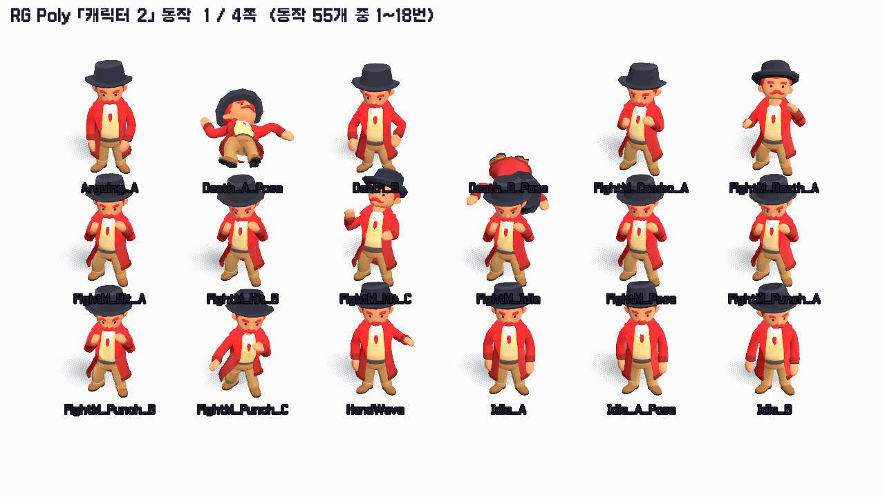
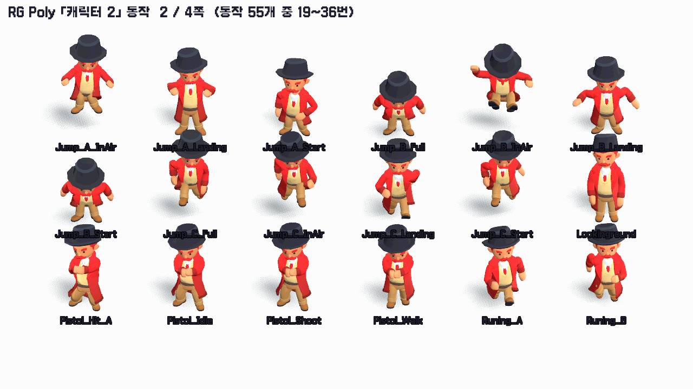
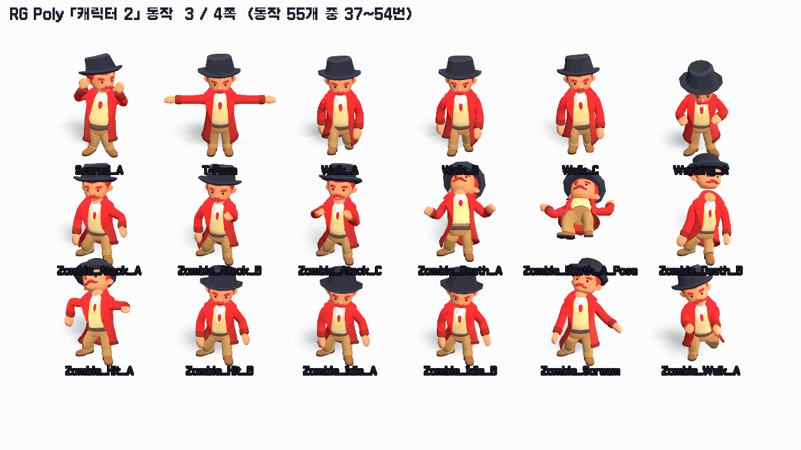
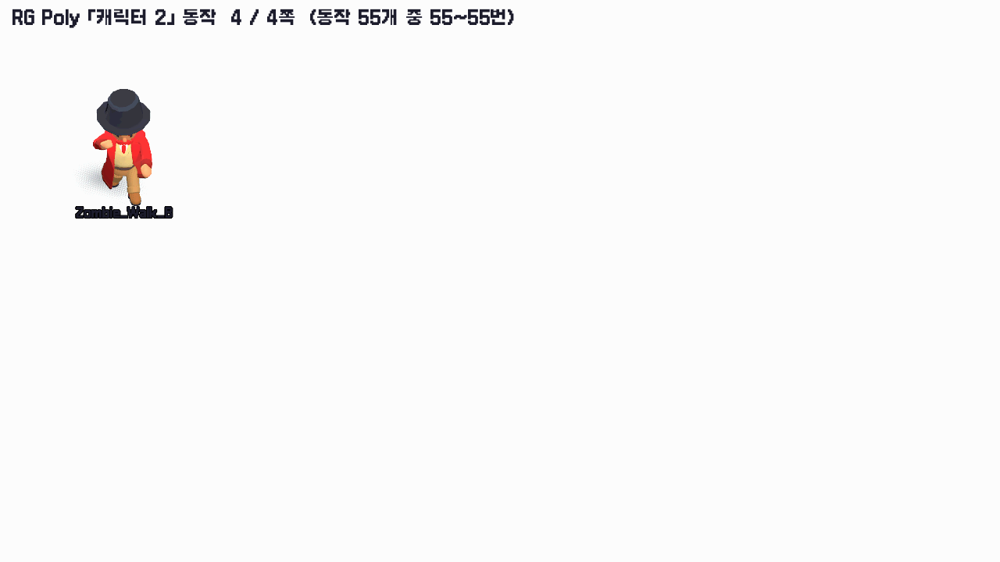
보여 주는 캐릭터는 이 묶음의 좀비(Character_Z).
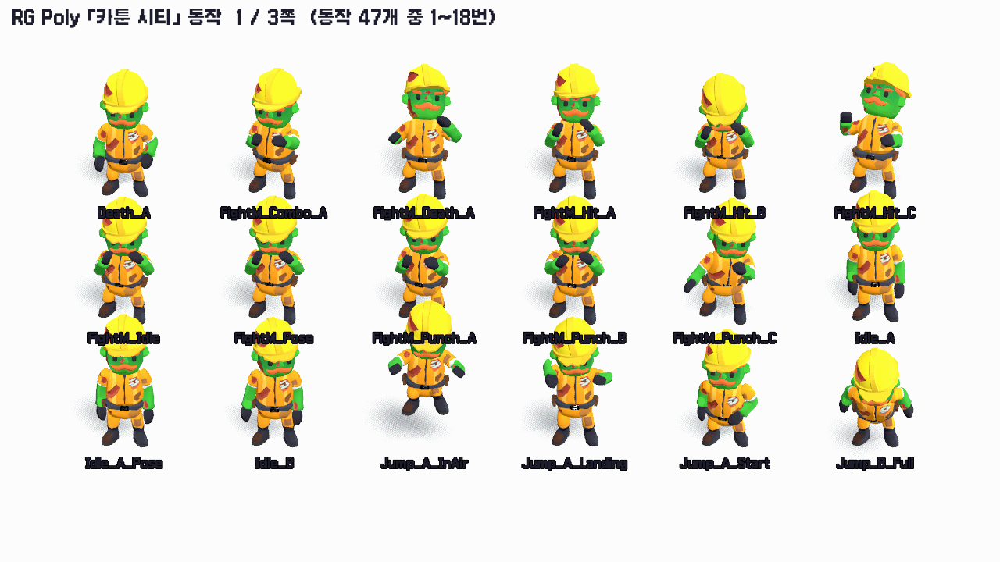
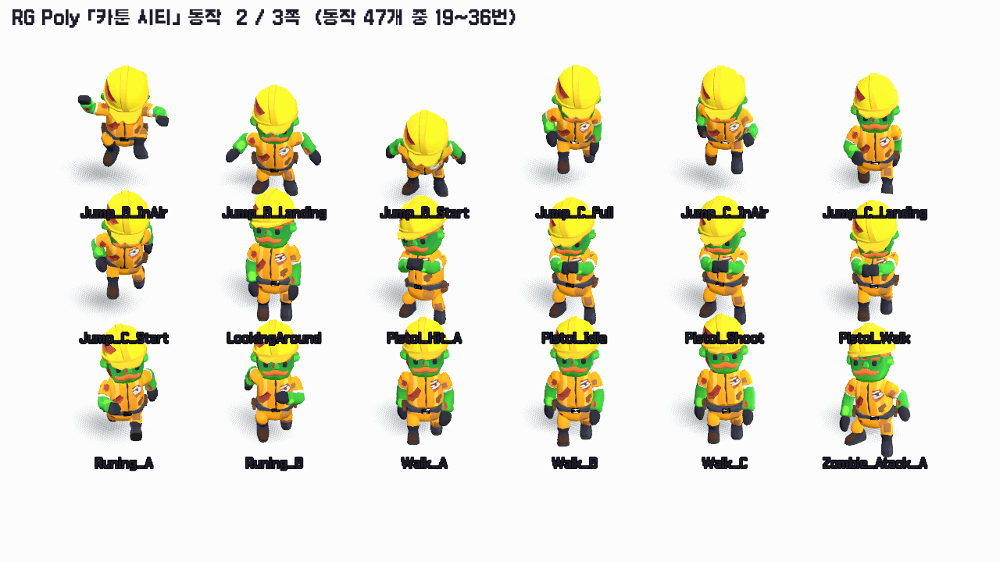
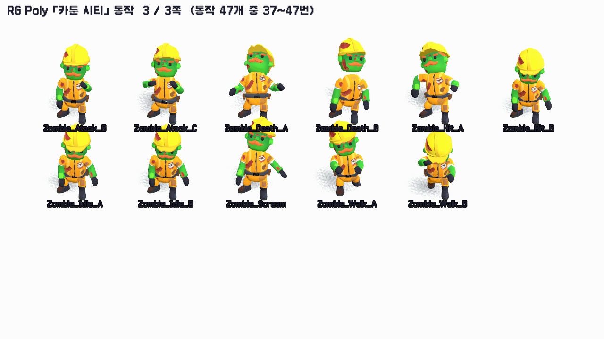
① EmaceArt 6명(동작은 유니티 형식이라 못 씀, 팔만 내림)
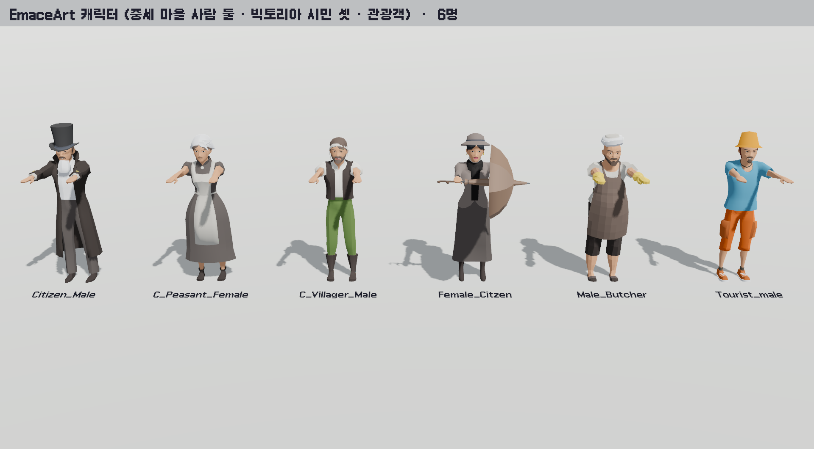
② RG Poly 「캐릭터 2」 종류별 20
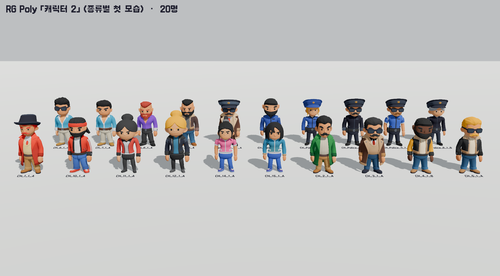
③ RG Poly 「카툰 시티」 종류별 15
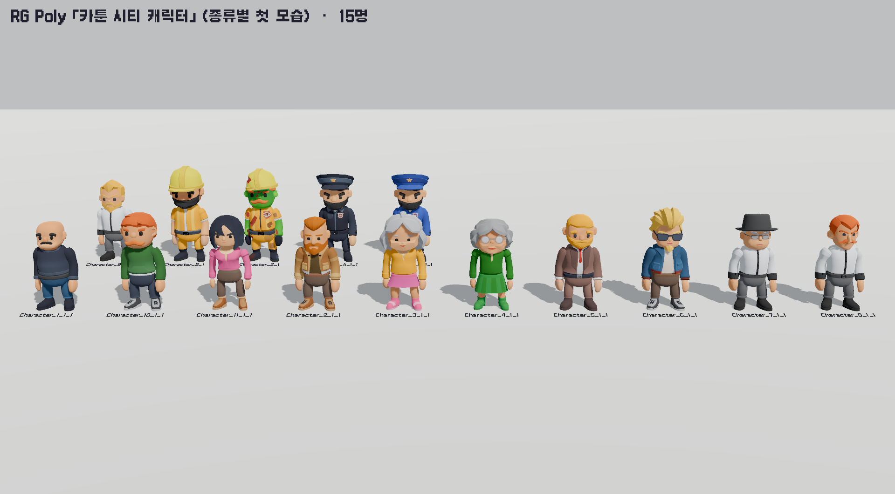
④ 큰 묶음에서 찾은 것: 아시아 사람 7(동작 없음), 해골 해적 2, 말 3·쥐, 바다 괴물 8(색은 확인 필요)
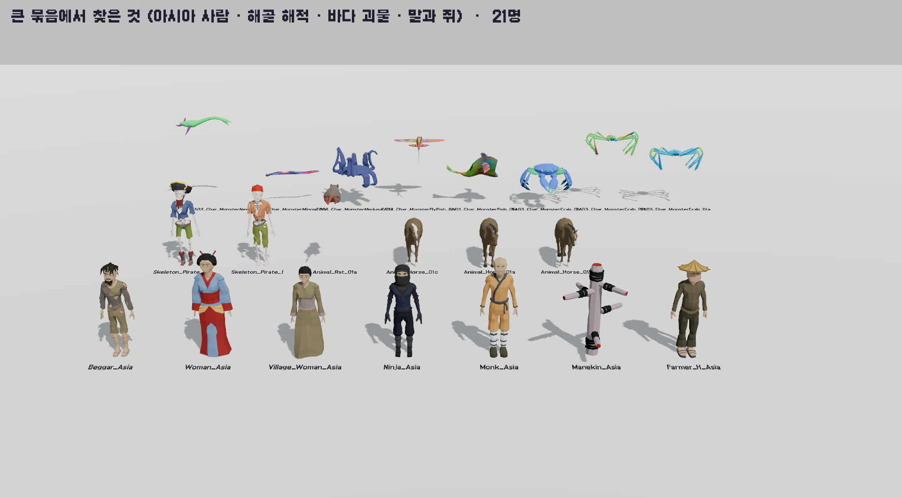